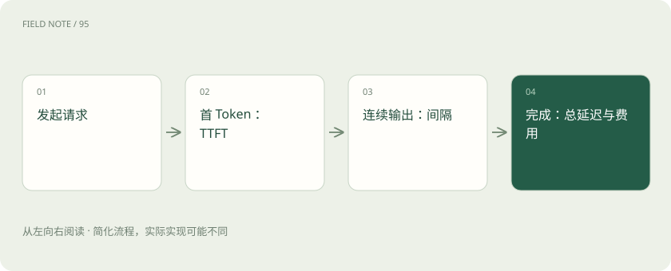

先读哪些知识
先用一个类比理解
餐馆从下单到第一道菜像 TTFT，上菜间隔像 Token 间隔，全部吃齐像端到端延迟，每小时服务多少桌像吞吐。这个类比不代表每个 Token 是同等大小的信息。
类比只帮助建立直觉，不等同于技术的完整机制。
一图看懂

三个时间不能互相替代
TTFT 是测量起点到首 Token 的时间，可能包含网络、排队与 Prefill，具体取决于口径。Token 间隔描述输出阶段。总延迟还受输出长度影响，因此比较必须控制输入与输出分布。
P95 与吞吐一起看
P95 表示所测样本中约 95% 的值不超过该位置对应值；不是最慢值，也不是“95% 正确率”。吞吐可按请求数或 Token 数计，必须标明单位。流量过高时吞吐可能上升但排队更长。
成本应按成功任务计算
教学示例：A 每次调用 0.01 元、成功率 50%，B 每次 0.015 元、成功率 90%。若粗略以调用价除成功率，分别约为 0.02 元和 0.0167 元/成功任务。真实分析还要包括重试、工具、检索与运维。
放进真实场景
SCENARIO
两套服务输出长度不同，直接比较“完成用时”会混入长度影响。先统一测试条件，再比较延迟分位数和质量。
别踩这个误区
流式响应能改善感知等待，不意味着完整答案一定更早完成；示例价格不是任何厂商报价。
想一想
平均延迟低，就能保证多数高峰用户体验好吗？
不能。还应检查尾部延迟、到达流量、失败率和排队情况。
关联阅读
资料与边界
本文为原创知识讲解。类比和图示经过简化；示例数字不代表实测或报价。整理日期：2026-11-04。文末列出对应技术的原始资料，具体功能与版本支持请以原文为准。